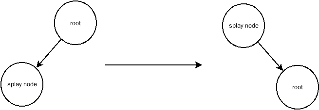
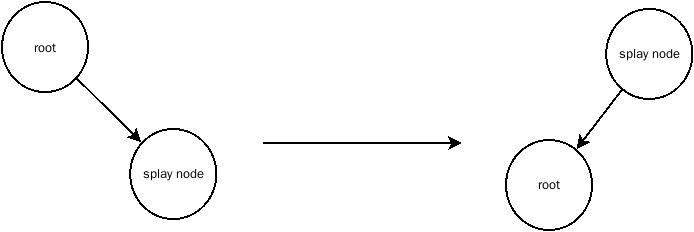
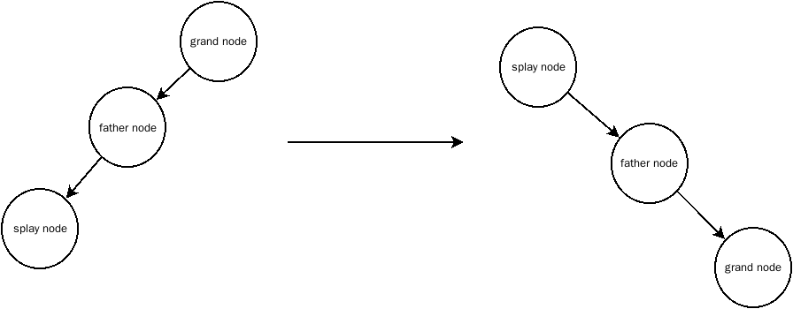
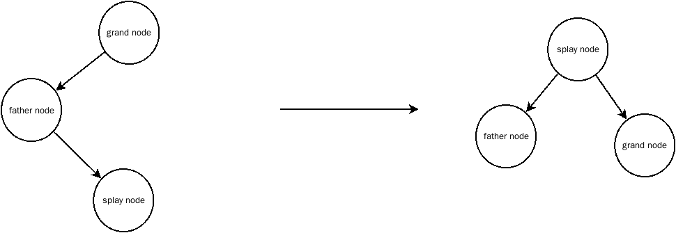
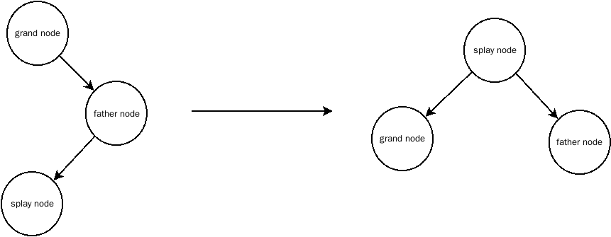
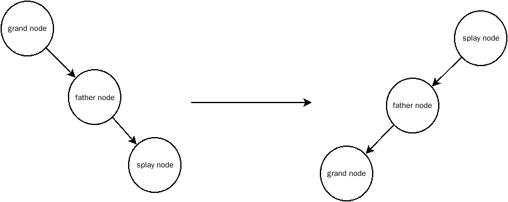

什么是伸展树
伸展树保证了从空树开始任意连续 M 次对树的操作最多话费 O(M log N) 时间，伸展树是二叉搜索树的一种变形，不同于 AVL 树，伸展树不需要维护节点的高度，相对 AVL 树来说比较容易实现
当一个节点被访问时它就有可能在不久之后被再次访问，因此，伸展树的基本思想是：当一个节点被访问，它就经过一系列 AVL 树的旋转操作将该节点放到根上
将某个节点经过一系列的变形移动到树根上的操作称之为伸展(Splay)，伸展操作主要进行六个形态的转变，再将伸展节点伸展之后会再次检查伸展节点的位置，如果伸展节点是根结点则返回，否则继续伸展
- 
- 
- 
- 
- 
- 
伸展树声明
1
2
3
4
5
6
7
8
9
10
11
12
13
14
15
16
17
18
19
20
21
22
| SplayTree MakeEmpty(SplayTree T);
Position Find(ElementType X,SplayTree T);
Position FindMin(SplayTree T);
Position FindMax(SplayTree T);
SplayTree Insert(ElementType X,SplayTree T);
SplayTree Delete(ElementType X,SplayTree T);
ElementType Retrieve(Position P);
Position FindPositionUp(SplayTree T,ElementType X);
void printTree(SplayTree T);
static Position SingleRotaleWithLeft(Position T);
static Position SingleRotaleWithRight(Position T);
static Position ContinuRotaleWithLeft(Position T);
static Position ContinuRotaleWithRight(Position T);
static Position DoubleRotaleWithLeft(Position T);
static Position DoubleRotaleWithRight(Position T);
static Position Splay(ElementType X,SplayTree T);
struct TreeNode{
ElementType Element;
SplayTree Left;
SplayTree Right;
};
|
伸展功能
伸展功能依赖于 6 个函数分别时左旋转，右旋转，连续左旋转，连续右旋转，左双旋转，右双旋转，分别对应 6 中变形
1
2
3
4
5
6
7
8
9
10
11
12
13
14
15
16
17
18
19
20
21
22
23
24
25
26
27
28
29
30
31
32
33
34
|
static Position SingleRotaleWithLeft(Position T){
Position ptr = T->Left;
T->Left = ptr->Right;
ptr->Right = T;
return ptr;
}
static Position SingleRotaleWithRight(Position T){
Position ptr = T->Right;
T->Right = ptr->Left;
ptr->Left = T;
return ptr;
}
static Position ContinuRotaleWithLeft(Position T){
Position ptr = SingleRotaleWithLeft(T);
return SingleRotaleWithLeft(ptr);
}
static Position DoubleRotaleWithLeft(Position T){
T->Right = SingleRotaleWithLeft(T->Right);
return SingleRotaleWithRight(T);
}
static Position ContinuRotaleWithRight(Position T){
Position ptr = SingleRotaleWithRight(T);
return SingleRotaleWithRight(ptr);
}
static Position DoubleRotaleWithRight(Position T){
T->Left = SingleRotaleWithRight(T->Left);
return SingleRotaleWithLeft(T);
}
|
伸展树的伸展流程如下:
- 伸展节点为根节点，不做任何改变，并返回
- 伸展节点是根结点的左儿子，将伸展节点向左旋转
- 伸展节点是根结点的右儿子，将伸展节点向左旋转
- 伸展节点不属于上述三种情况，将伸展节点称为X,X的父结点称为F，F的父结点称为G，G节点就是X节点的’祖父’节点
4.1. 如果G的左儿子是F，并且F的左儿子是X，进行连续左旋转
4.2. 如果G的右儿子是F，并且F的右儿子是X，进行连续右旋转
4.3. 如果G的左儿子是F，并且F的右儿子是X，进行左双旋转
4.4. 如果G的右儿子是F，并且F的左儿子是X，进行有双旋转
1
2
3
4
5
6
7
8
9
10
11
12
13
14
15
16
17
18
19
20
21
22
23
24
25
26
27
28
29
30
31
32
33
34
35
36
37
38
39
40
41
42
43
44
45
46
47
48
49
50
51
52
53
54
55
| static Position Splay(ElementType X,SplayTree T){
if(T == NULL || T->Element == X) return T;
Position fatherNode = FindPositionUp(T,X);
if(fatherNode == T){
if(fatherNode->Left != NULL && fatherNode->Left->Element == X){
return SingleRotaleWithLeft(fatherNode);
}else if(fatherNode->Right != NULL && fatherNode->Right->Element == X){
return SingleRotaleWithRight(fatherNode);
}
}else{
Position grandNode = FindPositionUp(T,fatherNode->Element);
Position grandGrandNode = FindPositionUp(T,grandNode->Element);
Position temp = NULL;
int level = -1;
if(grandNode->Left != NULL && grandNode->Left == fatherNode){
if(fatherNode->Left != NULL && fatherNode->Left->Element == X){
level = 1;
}else if(fatherNode->Right != NULL && fatherNode->Right->Element == X){
level = 2;
}
}else if(grandNode->Right != NULL && grandNode->Right == fatherNode){
if(fatherNode->Left != NULL && fatherNode->Left->Element == X){
level = 3;
}else if(fatherNode->Right != NULL && fatherNode->Right->Element == X){
level = 4;
}
}
switch(level){
case 1:
temp = ContinuRotaleWithLeft(grandNode);
break;
case 2:
temp = DoubleRotaleWithRight(grandNode);
break;
case 3:
temp = DoubleRotaleWithLeft(grandNode);
break;
case 4:
temp = ContinuRotaleWithRight(grandNode);
break;
}
if(grandNode == T)
return temp;
else if(grandGrandNode->Left == grandNode)
grandGrandNode->Left = temp;
else if(grandGrandNode->Right == grandNode)
grandGrandNode->Right = temp;
return Splay(X,T);
}
}
|
查询操作
查询操作先要确定树中含有要查询的节点，如果没有则直接返回，否则将查询到的节点进行伸展移动到根结点然后返回
1
2
3
4
5
6
7
8
9
10
11
12
13
| Position Find(ElementType X,SplayTree T){
if(T->Element == X) return T;
Position dst = T;
while(dst != NULL && X != dst->Element){
if(X < dst->Element)
dst = dst->Left;
else if(X > dst->Element)
dst = dst->Right;
}
if(dst != NULL)
return Splay(X,T);
return T;
}
|
插入操作
插入操作先将元素按照二叉搜索树的性质插入树中，然后在将插入的节点伸展到根结点
1
2
3
4
5
6
7
8
9
10
11
12
13
14
15
16
17
18
19
20
21
22
23
24
25
26
27
28
29
30
31
| SplayTree Insert(ElementType X,SplayTree T){
Position temp = NULL;
temp = (SplayTree)malloc(sizeof(struct TreeNode));
if(temp == NULL){
printf("初始化树失败\n");
return NULL;
}
temp->Element = X;
temp->Left = temp->Right = NULL;
if(T == NULL){
T = temp;
return T;
}
Position ptr = T;
while(1){
if(X < ptr->Element && ptr->Left != NULL){
ptr = ptr->Left;
}else if(X > ptr->Element && ptr->Right != NULL){
ptr = ptr->Right;
}else if(X < ptr->Element && ptr->Left == NULL){
ptr->Left = temp;
break;
}else if(X > ptr->Element && ptr->Right == NULL){
ptr->Right = temp;
break;
}
}
return Splay(X,T);
}
|
删除操作
删除操作先将删除节点伸展到根结点，此时，根结点的左子树元素都小于根节点，右子树元素都大于根结点，删除根结点，然后将左子树的最大元素进行伸展，此时左子树根结点是左子树中的最大元素，没有右儿子，然后再将左子树的右指针指向右子树，删除完成
1
2
3
4
5
6
7
8
9
10
11
12
13
14
| SplayTree Delete(ElementType X,SplayTree T){
if(T == NULL) return NULL;
if(X == T->Element){
if(T->Left == NULL) return T->Right;
else if(T->Right == NULL) return T->Left;
Position left = FindMax(T->Left);
left->Right = T->Right;
free(T);
return left;
}
T = Splay(X,T);
return Delete(X,T);
}
|
参考源码